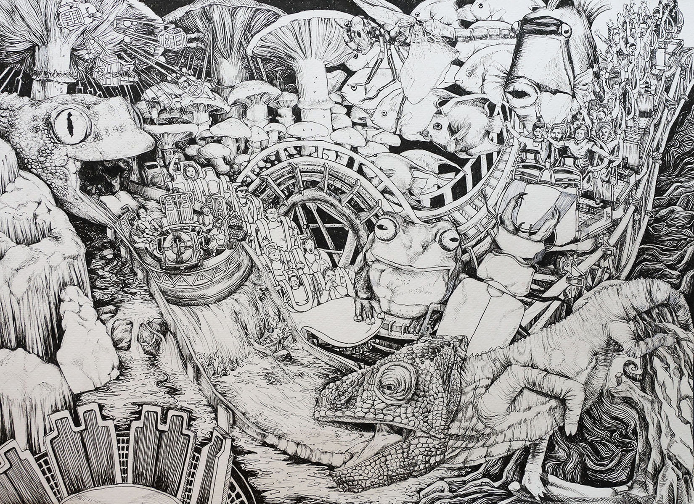
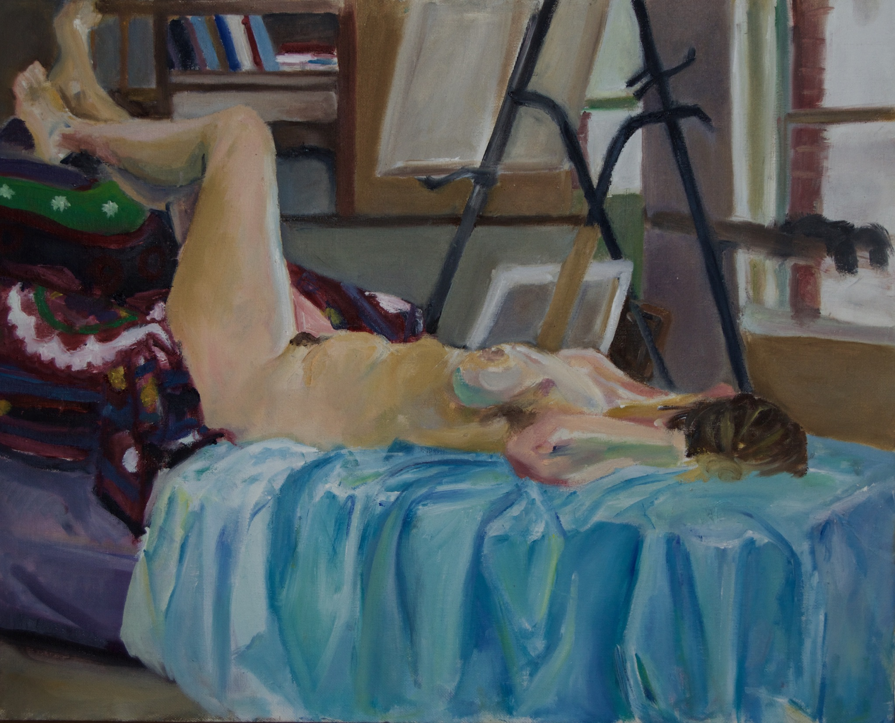
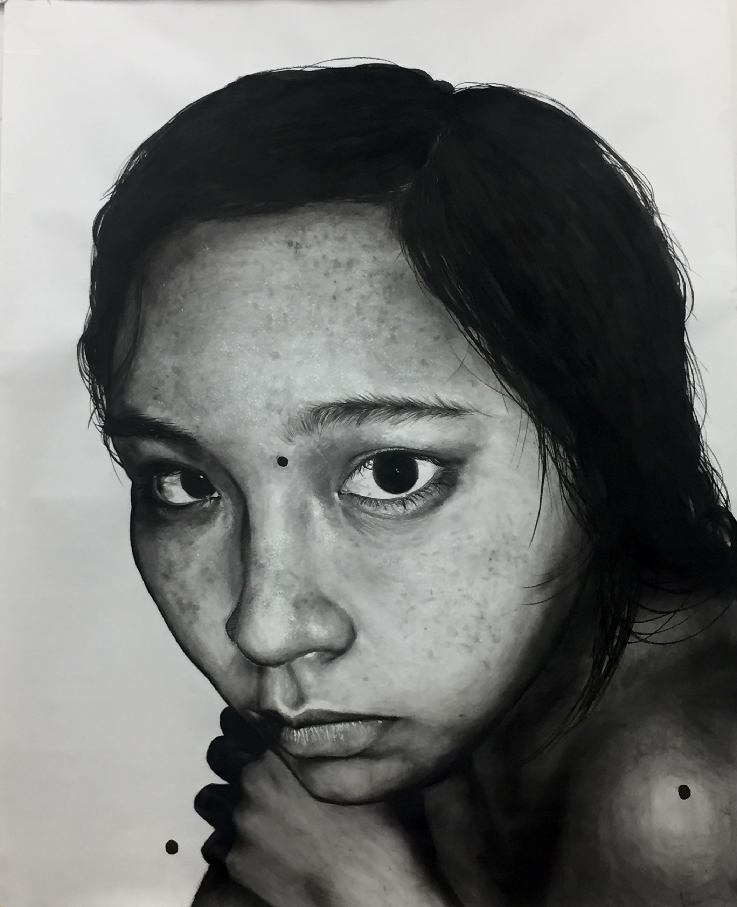

ZeniadaFall 2019
Qing Ming
Dark orange nights lasted for a few days after.
Sweaty fingers plugged in my ears drown out the penetrating explosions of
popcorn fire crackers combusting with dying stars
Mama drew a circle on the ground with white chalk.
Green glint on the plastic lighter shuffled a fire was born
Tingling scabs on my knee as jumpy sparks grazed my hair
My fingers mirrored each other when buddha saw my little head drooping
under respect. Tracing prayers in orange darkness I heard
the bells tinker on bicycles selling incense sticks a taxi driver’s
coarse voice after cigarette years, and water from seafood restaurants
splashing onto the street.
Lights from streetlights, fire and stars burrowed their way into
my cornea watered
smoke stringed together blooming pieces of burning paper money
reaching into the sky
I hope they could find their way among souls of wandering warriors
across mountains and prairies
That night I did not think about birth, death nor flowering hypotheses, not even love
I dreamt of nothing but lights within darkness
Jia Yi (Ady) Zhang studies molecular and cellular biology and public health at Johns Hopkins University. She is from Vancouver, BC and she enjoys summer weather with cumulonimbus clouds.
Next | Table of ContentsCyclops
A strange bug is in my eye
crawling and lurking
in the soft eshy corner, this
raw and uneasy form, the
panicked spasm of unfamiliarity
and some desperate rest
between blinks
as if to collect salt and water
under its translucent wings, before
our next fruitless attempt
to set it free.
Marielle Asensio is an English and Creative Writing major at the University of Iowa, with additional focuses in Art and Environmental Sustainability. She hopes to continue incorporating art and nature in her writing.
Previous | Next | Table of ContentsDream Park

Rachel Jiang is a sophomore student studying Design at USC. She is interested in maximalism, consumerism, and distortion as subject matters and primarily works with pen, colored pencil, and acrylic paint.
Portfolio: https://www.behance.net/racheljiang
Instagram: @racheljiang
Little Pinto Lady
The smell of peeling pinto beans over steaming water,
As you say, in Texas sometimes we’d find scorpions
hiding at the bottom of the bag.
Shake it to animate the jumping beans
Like fleas off the dog’s back
Struggling for air in the summer heat,
Scratching dry skin
Eczema on my forearm because
This is cold for a Texan.
Citrus lemon hair dye
To lighten the roots,
As you say, it’s fun to pretend.
I take in the heat of the sun the
only warmth I found, in the backyard filled
with my favorite dragon flies, night time
pool light on, buzzing with the cleanest
flies I’d care to remember.
But now when I smell horchata
I want to run to the kitchen,
poke dirty fingers in the hot pot,
licked clean, scolding.
You cared in ways foreign to me
like your native tongue,
we could not speak
So we’d eat.
freshly cut watermelon on the yellowed grass,
Eat. Eat till the food could not be suppressed.
Eat like it is all the love in life I never gave to you.
Sarah Nolte is an undergraduate student at San Jose State University majoring in English. She enjoys writing about the human condition, emotional turmoils, and deeply seeded generational traumas. She is from southern California and when she is not writing, she enjoys the solitude of natural exploration and reading.
Previous | Next | Table of ContentsHappy Anniversary
not to my mother and father but to the house that raised me, on Park,
within her walls as is if she conceived me. Summers insulate her humid breath like pores on
human skin
her creviced windows and doors breathe in cold evening winds while the sour
lemonades we drank made
our hairs stand, our bodies shiver, glistening in our stickiness, the taste of
salt from our sweat stains the living room couch—we melt like plastic.
Alexandra Aubry is from Oakland, California and attends San Jose State University as an Advertising major (she graduates this December!). She is an artist and a homebody—she likes to write and cook on the side.
Previous | Next | Table of ContentsSaba (Grandfather)
We used to say you had bird bones.
I remember scuba diving,
The instructor strapping weights to your belt—
So many your suit begged to peel away from your skin-and-
bones frame.
Your partner swam above you, one hand on your back,
pushing you downwards.
Still you floated helplessly upwards,
Towards the air.
No intent or resistance,
Just a shared, bemused interest in a body beyond your
control.
It wasn’t water that took you.
Polluted air filling eager lungs
I watched your feathery softness succumb to crumbling
ashes,
Your gentle smile cracked with anticipated goodbyes.
To the future graduations you’d never see,
The summer trips still unplanned,
Wishing for so little:
One more sunset,
A glass of wine,
Another cigarette
You held no anger,
No resistance.
Your weightless body never did believe in fighting the
inevitable.
And so you rose gently
With collapsed lungs
While I studied an ocean away.
Feathery softness turned to ashes,
Obscured by rising smoke.
Gaia Denisi is a senior at Williams College where she is earning a BA in English. She is from Northern California and hopes to pursue a career in publishing or education after graduating.
Previous | Next | Table of ContentsAbstraction 1.1

Rebecca Penner studies Film and Visual Arts at Johns Hopkins University, though is currently on a Fine Arts exchange at University of the Arts London, Chelsea College of Art. In her work she explores the relationship between the subconscious and interpersonal relationships. You can see more of her work on Instagram at @rebecca_penner or at rebecca-penner.com.
Previous | Next | Table of ContentsReclined Figure

Yvette Bailey-Emberson enjoys studying the human figure through observational studies working with a live model. She plays around with composition and pulling out colors one may not normally see to make the figure more dynamic and to show the beauty and energy in otherwise quiet snapshots of life. She attends Johns Hopkins University.
Previous | Next | Table of Contentsstitch
summer solstice, air threaded with seed ants.
on fire.
trees laced with pearls, children playing
hide and seek, muddy hands, scraped knees—
the summer a nodule
budded on dad’s lung,
2 centimeters, smooth.
i’d listen as he coughed for minutes on end.
i never liked how he’d lock himself
in his room, wouldn’t open
no matter how many times i knocked.
how he wore his pajamas all day
like he was already a corpse.
the air purifier’s slow hum
filled the house,
cold-pressed celery and ginger juice
making me think of when we used to
pick strawberries every summer.
now he is taking it all back,
the sticky sweetness back to the fields,
red as the blood he coughs up.
the air purifier’s death hymn
choking me to sleep.
i crossed my fingers, felt blade
shave flesh, cut a piece of his lung.
now i am wrapping gauze around his chest,
counting every stitch,
the reds and purples healing over,
the layer of fat around his belly
thickening like jam—dead ants, yellowing trees,
children playing hide-and seek. muddy hands,
scraped knees. i am painting headstones,
clenching time in my fist,
breaking my fist
as each stitch blooms again,
turning into a knot.
Joyce Ker is a freshman at Johns Hopkins University whose poetry has appeared in TAB Journal of Poetry and Poetics, Tule Review, Louisville Review, and Boxcar Poetry Review. She is a California Arts Scholar and alumna of the Iowa Young Writers’ Studio. Ker has been nominated for the Best New Poets anthology and the Pushcart Prize.
Previous | Next | Table of ContentsSinful

Jieun Yu is a student creative trying to make the best use of art as a medium of conversation. She likes to draw inspiration from her experiences as a woman and a social minority (of different categories) and connect with the audience in an intimate, raw, and vulnerable way. She attends Yale University.
Previous | Table of Contents